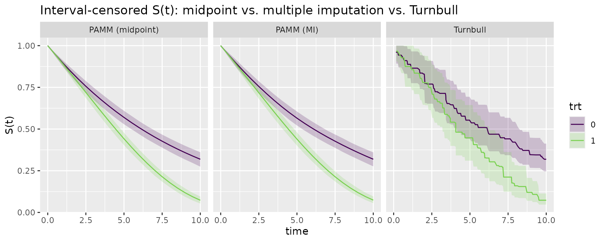
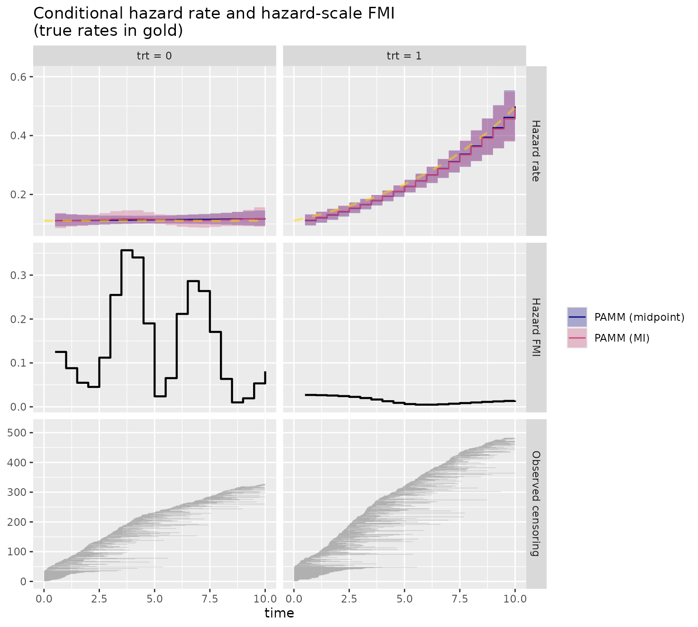
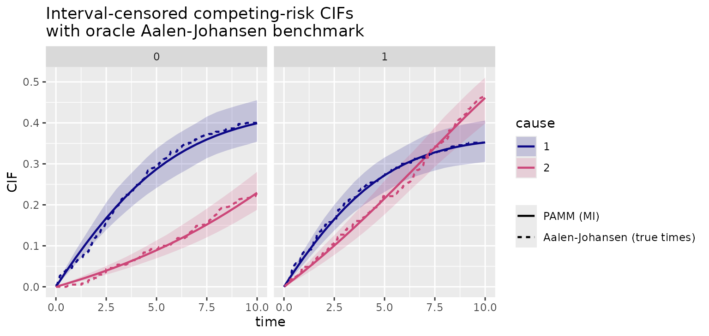

vignettes/interval-censored.Rmd
interval-censored.RmdIn many studies the event time is not observed exactly but only known to lie in an interval – for example because subjects are examined at a sequence of inspection times and we only learn that the event happened between the last clean and the first positive visit. This is interval censoring.
A piecewise-exponential additive model (PAMM) assumes a
piecewise-constant hazard, so the conditional distribution of the event
time within
is known in closed form. pammtools exploits this with a
multiple imputation (MI) strategy (Pan 2000): exact event times are repeatedly
drawn from
,
each completed data set is transformed and re-fit with the
standard right-censored pipeline, and the fits are pooled for
inference following Rubin’s rules (Rubin
1987). Naive midpoint imputation, by contrast, typically yields
reasonable point estimates but invalid (too narrow) confidence
intervals. Related model-based imputation schemes for the
interval-censored hazard are discussed by Bebchuk
and Betensky (2000); the icenReg package (Anderson-Bergman 2017) provides non-parametric
and parametric alternatives that are useful as a cross-check.
Interval-censored data are specified through the usual
survival interface,
Surv(L, R, type = "interval2"), where L == R
denotes an exact time, R == Inf a right-censored
observation, L == 0 a left-censored one, and
0 < L < R < Inf a genuine interval.
add_inspections() turns exact simulated times (here from
sim_pexp()) into interval-censored panel data by drawing
(per-subject, by default) inspection times. The true event time is
retained in true_time so we can check our work.
Here a binary covariate trt acts through a
time-varying effect that is absent at baseline and
grows over follow-up. The control group (trt == 0)
has a constant hazard; the other group starts at the same
hazard but its log-hazard then rises linearly in time – the log-hazard
ratio is 0.15 * t, zero at t = 0 – so the two
hazards start together and fan apart, an increasingly harmful effect and
a clear departure from proportional hazards. Because factors enter the
(numeric) linear predictor directly, the effect is written with an
explicit indicator (trt == 1).
The inspection rate controls how much information the
interval censoring destroys: a dense grid pins each event down tightly
and leaves little to impute, a sparse one brackets events only loosely.
We use a moderate schedule (rate = 1.5, mean
inter-inspection gap
)
– dense enough that these simple hazards are recovered well, yet still
leaving each event bracketed in an interval that straddles several
analysis cut-points, so the gap between proper MI and naive midpoint
intervals stays appreciable.
set.seed(3)
df <- data.frame(trt = rbinom(1000, 1, 0.5) |> as.factor())
sdf <- sim_pexp(~ -2.2 + 0.15 * t * (trt == "1"), df,
cut = seq(0, 10, by = 0.1))
icd <- add_inspections(sdf, rate = 1.5, max_time = 10)
icd %>% select(id, trt, true_time, L, R) %>% head()## # A tibble: 6 × 5
## id trt true_time L R
## <int> <fct> <dbl> <dbl> <dbl>
## 1 1 0 10 10 Inf
## 2 2 1 6.89 6.87 7.33
## 3 3 0 10 10 Inf
## 4 4 0 10 10 Inf
## 5 5 1 3.98 3.96 4.31
## 6 6 1 3.78 3.21 3.78pamm_ic() runs the whole MI workflow: an initial
midpoint fit, then m rounds of (proper) imputation and
re-fitting on a fixed interval grid.
We give each group its own smooth log-baseline-hazard via
s(tend, by = trt) (a factor by-variable yields
one centred smooth per level) plus the parametric trt main
effect for the overall level difference between groups.
fit <- pamm_ic(
Surv(L, R, type = "interval2") ~ trt,
data = icd,
model_formula = ped_status ~ trt + s(tend, by = trt),
cut = seq(0, 10, by = 0.5),
m = 20
)
fit## Piecewise exponential additive model for interval-censored data
## via multiple imputation (20 proper imputations)
## task : single event
## model : ped_status ~ trt + s(tend, by = trt)
## subjects : 1000 (809 interval/left-censored)
## cut-points : 21 breaks in [0, 10]
##
## Use summary() for pooled inference and add_*() for pooled quantities of interest.print() gives a compact overview; summary()
reports the pooled inference: parametric coefficients
and covariances are combined with Rubin’s rules (so the reported
standard errors include the between-imputation variability), term
p-values use the median-p rule (Bolt et al.
2022), and the fraction of missing information induced by the
interval censoring is reported as well.
summary(fit)## Pooled PAMM summary (multiple imputation for interval-censored data)
##
## Task : single event
## Family : poisson
## Model : ped_status ~ trt + s(tend, by = trt)
## Imputations : 20 (proper)
## Subjects : 1000 ( 809 interval/left-censored ); PED rows per fit: 11042
##
## Parametric coefficients (Rubin-pooled estimates & SEs, median-p):
## Estimate Std. Error z value Pr(>|z|)
## (Intercept) -2.1743 0.0559 -38.91 < 2e-16 ***
## trt1 0.5358 0.0730 7.34 1.4e-13 ***
## ---
## Signif. codes: 0 '***' 0.001 '**' 0.01 '*' 0.05 '.' 0.1 ' ' 1
##
## Approximate significance of smooth terms (mean edf, median-p over imputations):
## edf Ref.df statistic p-value
## s(tend):trt0 1.72 1.98 0.96 0.79
## s(tend):trt1 1.00 1.00 82.19 <2e-16 ***
## ---
## Signif. codes: 0 '***' 0.001 '**' 0.01 '*' 0.05 '.' 0.1 ' ' 1
##
## Fraction of missing information (FMI):
## Parametric coefficients:
## FMI
## (Intercept) 0.003
## trt1 0.008
##
## Smooth terms (five-number summaries over training PED rows):
## Min Q1 Median Q3 Max
## s(tend):trt0 0.013 0.013 0.029 0.171 0.591
## s(tend):trt1 0.024 0.024 0.039 0.039 0.039
##
## Standard errors include within- + between-imputation variance (Rubin's rules);
## p-values are medians over imputations.The m imputation fits are stored in
fit$fits in a slimmed form (the per-observation slots are
dropped, so memory does not grow with the data set size), and pooled
summary diagnostics live in fit$pooled. Because smooth
bases can differ across imputed data sets, fit$pooled is
not a single gam object for direct predict()
or plot() calls. The pooled add_*() methods
below operate on the imputation fits directly: they combine the
per-imputation posterior draws so the intervals reflect both within- and
between-imputation uncertainty.
The fraction of missing information (FMI) is a
Rubin-style diagnostic for how much of an estimate’s uncertainty is due
to the unobserved exact event times. For a scalar quantity
,
write
for the average within-imputation variance and
for the between-imputation variance of the point estimates. The relative
increase in variance is
,
and the FMI is the corresponding fraction of the total uncertainty
attributable to the missing information (with the usual small-sample
correction for finite m). Values near zero mean that
interval censoring adds little uncertainty for that quantity; values
near one mean the imputed event times dominate the uncertainty.
summary() reports this for the parametric coefficients, and
for smooth terms it reports five-number summaries over the training PED
grid. Below we compute the same diagnostic directly for the hazard rate,
point-by-point on the plotting grid.
FMI is also useful for choosing the number of imputations. Small
values of m such as 5 or 10 are fine while developing the
model, but reported analyses should usually start around
m = 20. If the reported FMI values are mostly below 0.10,
that is often enough; if they are around 0.10–0.30, use roughly 30–50
imputations; if they are around 0.30–0.50, use roughly 50–100; and if
they are larger than 0.50, use at least 100 and check sensitivity to a
larger m or a different random seed. The classical
relative-efficiency approximation,
for FMI
,
explains why moderate m can already be efficient on
average, but plotted smooths and interval endpoints can still show Monte
Carlo noise. Keep this separate from nsim: m
controls imputation uncertainty, whereas nsim controls the
simulation noise in posterior-draw intervals for plotted quantities of
interest.
We compare two PAMM estimates per group. The MI
estimate pools the imputation fits, so its intervals carry both the
within-fit and the between-imputation uncertainty. The
midpoint estimate is the initialiser fit
(fit$init_fit): a single PAMM fit to the interval
midpoints, which treats those imputed times as if observed. We request
simulation-based intervals
(ci_type = "sim") for the midpoint fit so that both
estimates use the same (proper) interval machinery as the pooled
pamm_ic methods – the pooled methods always simulate from
each fit’s posterior, so this is a like-for-like comparison that differs
only by the between-imputation variance. (The default
ci_type = "default" instead cumulates the pointwise hazard
limits, which yields a noticeably more conservative band.)
ped <- as_ped(icd, Surv(L, R, type = "interval2") ~ trt, cut = seq(0, 10, by = 0.5))
nd <- make_newdata(ped, tend = unique(tend), trt = unique(trt)) %>% group_by(trt)
# midpoint = initialiser fit (single completed data set, no imputation uncertainty)
set.seed(1) # the simulation-based intervals draw from each fit's posterior
surv_mid <- add_surv_prob(nd, fit$init_fit, ci_type = "sim", nsim = 1000)
surv_mi <- add_surv_prob(nd, fit, nsim = 1000)
hazard_mid <- add_hazard(nd, fit$init_fit, ci_type = "sim", nsim = 1000)
hazard_mi <- add_hazard(nd, fit, nsim = 1000)As a non-parametric cross-check we add the Turnbull
estimator – the NPMLE of the survival function for interval-censored
data – computed per group. survival::survfit() runs the
Turnbull EM algorithm when handed an interval2 response and
returns pointwise confidence limits.
tb <- survfit(Surv(L, R, type = "interval2") ~ trt, data = icd)
tb_df <- data.frame(
tend = tb$time,
surv = tb$surv,
lower = tb$lower,
upper = tb$upper,
trt = factor(rep(c(0, 1), tb$strata)) # strata are ordered trt = 0, then 1
)All three recover the diverging survival curves well – the groups
start together and the increasingly harmful effect opens a growing gap.
The midpoint intervals are the tightest – they ignore the imputation
uncertainty and are therefore over-confident; the MI intervals are wider
(the censoring here induces a sizeable fraction of missing information,
see summary(fit) above), and the non-parametric Turnbull
intervals are wider and more jagged still.
prep <- function(d, method) {
transmute(d, tend, trt = factor(trt),
surv = surv_prob, lower = surv_lower, upper = surv_upper, method = method)
}
surv_all <- bind_rows(
prep(surv_mid, "PAMM (midpoint)"),
prep(surv_mi, "PAMM (MI)"),
transmute(tb_df, tend, trt, surv, lower, upper, method = "Turnbull"))
surv_all$method <- factor(surv_all$method,
levels = c("PAMM (midpoint)", "PAMM (MI)", "Turnbull"))
ggplot(surv_all, aes(x = tend, y = surv, color = trt, fill = trt)) +
geom_ribbon(aes(ymin = lower, ymax = upper), alpha = 0.2, color = NA) +
geom_line() +
facet_grid(~ method) +
scale_color_viridis_d(end = 0.8, aesthetics = c("colour", "fill")) +
labs(x = "time", y = "S(t)", color = "trt", fill = "trt",
title = "Interval-censored S(t): midpoint vs. multiple imputation vs. Turnbull")
The over-confidence of the midpoint fit is easy to quantify. The
ratio below is MI interval width / midpoint interval width,
so values above one mean that proper MI gives wider intervals:
# MI-CI-width / midpoint-CI-width
summary((surv_mi$surv_upper - surv_mi$surv_lower) /
(surv_mid$surv_upper - surv_mid$surv_lower))## Min. 1st Qu. Median Mean 3rd Qu. Max. NAs
## 0.9452 0.9981 1.0474 1.0401 1.0583 1.2835 2The effect is more visible on the hazard scale, which depends directly on exact event timing which interval censoring leaves more uncertain. Overlaying the two methods within each group shows the MI hazard bands enveloping the (over-confident) midpoint-based bands, while the point estimates mostly agree:
haz_panels <- c("Hazard rate", "Hazard FMI", "Observed censoring")
haz_all <- bind_rows(
mutate(hazard_mid, method = "PAMM (midpoint)"),
mutate(hazard_mi, method = "PAMM (MI)")) %>%
mutate(trt = paste0("trt = ", trt),
method = factor(method, levels = c("PAMM (midpoint)", "PAMM (MI)")),
panel = factor("Hazard rate", levels = haz_panels))
# true conditional hazards from the data-generating log-hazard
tgrid <- seq(0, 10, by = 0.1)
haz_true <- bind_rows(
data.frame(tend = tgrid, trt = "trt = 0", hazard = exp(-2.2)),
data.frame(tend = tgrid, trt = "trt = 1", hazard = exp(-2.2 + 0.15 * tgrid))) %>%
mutate(panel = factor("Hazard rate", levels = haz_panels))
haz_fmi <- haz_fmi %>%
mutate(panel = factor(panel, levels = haz_panels))
censor_panel <- icd %>%
mutate(
trt = paste0("trt = ", trt),
panel = factor("Observed censoring", levels = haz_panels),
kind = case_when(
L == R ~ "Exact",
is.infinite(R) ~ "Right-censored",
TRUE ~ "Interval"
),
xmin = pmax(L, 0),
xmax = pmin(ifelse(is.infinite(R), 10, R), 10)
) %>%
group_by(trt) %>%
arrange(xmin, xmax, .by_group = TRUE) %>%
mutate(subject = row_number()) %>%
ungroup()
ggplot() +
geom_stepribbon(data = haz_all,
aes(x = tend, ymin = ci_lower, ymax = ci_upper, fill = method),
alpha = 0.3, color = NA) +
geom_step(data = haz_all,
aes(x = tend, y = hazard, color = method)) +
geom_line(data = haz_true, aes(x = tend, y = hazard), inherit.aes = FALSE,
color = "gold", alpha = 0.5, linewidth = 0.9, linetype = 2) +
geom_segment(data = filter(censor_panel, kind != "Exact"),
aes(x = xmin, xend = xmax, y = subject, yend = subject),
inherit.aes = FALSE, color = "grey35", alpha = 0.22, linewidth = 0.25) +
geom_point(data = filter(censor_panel, kind == "Exact"),
aes(x = xmin, y = subject),
inherit.aes = FALSE, color = "grey10", alpha = 0.5, size = 0.45) +
geom_step(data = haz_fmi, aes(x = tend, y = fmi),
inherit.aes = FALSE, color = "black", linewidth = 0.8) +
facet_grid(panel ~ trt, scales = "free_y") +
scale_color_viridis_d(end = 0.5, aesthetics = c("colour", "fill"), option = "C") +
labs(x = "time", y = NULL, color = NULL, fill = NULL,
title = "Conditional hazard rate and hazard-scale FMI\n(true rates in gold)")
The true rates (gold) are tracked closely across the whole range –
the constant trt = 0 hazard and the rising
trt = 1 hazard are both recovered well. The midpoint and MI
point estimates nearly coincide, consistent with midpoint giving
reasonable point estimates but over-confident intervals; the MI bands
are visibly wider throughout. The middle row shows where
interval censoring bites on the hazard scale: high FMI means that most
uncertainty in the local hazard estimate comes from not observing exact
event times. The pattern is time-local, rather than a single model-wide
number, because the event-time ambiguity matters most where the
interval-censored observations leave the hazard shape weakly pinned
down. The bottom row shows the observed censoring pattern itself: each
horizontal line is one subject’s observed interval (right-censored
observations are drawn up to the analysis horizon), and exact
observations would appear as points.
The hazard interval-width ratio uses the same format as the survival calculation:
# MI-CI-width / midpoint-CI-width
summary((hazard_mi$ci_upper - hazard_mi$ci_lower) /
(hazard_mid$ci_upper - hazard_mid$ci_lower))## Min. 1st Qu. Median Mean 3rd Qu. Max.
## 0.9479 0.9830 1.0498 1.1451 1.2659 1.7150So the imputation uncertainty inflates the hazard intervals more than
the survival intervals:
aggregates the hazard over time and the group-level survival stays
fairly well identified, whereas the hazard itself is tied directly to
exact event times, which interval censoring leaves uncertain (cf. the
large fraction of missing information reported by summary()
above).
The same machinery is available for add_cumu_hazard().
By default all m imputations are drawn from the single
midpoint-initialised fit (“one-step” MI). When the inspection intervals
are narrow relative to the time scale this is unbiased, but
with wide gaps (mean gap of the order of a third of the
follow-up) the initialiser’s midpoint bias leaks into the imputations:
early-time survival is over-estimated, and – because the pooled standard
errors remain honest – coverage deteriorates as
grows.
The remedy is iter: with iter = k, each
imputation chain alternates imputation and re-fitting on its own
completed data
times, so later imputations come from fits whose dependence on the
initialiser is progressively attenuated (a chained-MI scheme in the
spirit of poor man’s data augmentation (Wei and
Tanner 1990) and the maxit iterations of
mice (van
Buuren and Groothuis-Oudshoorn 2011)).
fit_sparse <- pamm_ic(
Surv(L, R, type = "interval2") ~ trt,
data = icd,
model_formula = ped_status ~ trt + s(tend, by = trt),
cut = seq(0, 10, by = 0.5),
m = 20,
iter = 3 # recommended for sparse panels
)Recommendation (from the package’s Monte Carlo
benchmark, 500 replications per cell): keep the default
iter = 1 for densely inspected data; use
iter = 3 for sparse panels – it removes most of the
early-time survival bias (iter = 5 essentially all of it,
with bias shrinking roughly geometrically) at a fit cost roughly linear
in iter. Two caveats from the same benchmark:
pamm_ic() flags such chains with a
warning (and in $unstable_chains); if it fires, inspect the
affected fits and consider a less flexible model_formula or
fewer iterations.With
competing causes, pamm_ic_cr() imputes the event time from
a fitted cause-specific PAMM while retaining observed
event causes. (It accepts the same iter argument as
pamm_ic(), with the same sparse-panel recommendation.) This
is the usual competing-risks interval-censoring setup: the cause is
known at detection, but the event time is only known to lie in
.
If an event cause is explicitly missing (NA),
pamm_ic_cr() can also sample the cause from the fitted
cause-specific hazards at the imputed time. Each completed data set is
then re-fit as a cause-specific PAMM, and cumulative incidence functions
are obtained from those hazards with add_cif(). Note that
this targets cause-specific hazards (and CIFs derived from them), and so
differs from Delord and Génin (2016), who
develop MI for interval-censored competing risks in the
subdistribution-hazard (Fine–Gray) framework; the
scheme here is the cause-specific analogue. Because we impute from a
cause-specific model and analyse with one, the imputation and analysis
models are congenial.
For a subject known to fail from cause in , the correct conditional density of the event time is the cause-sub-density, restricted to the interval, where is the all-cause hazard. The all-cause hazard is unavoidable here: to fail from cause at , the subject must first survive all causes up to (hence the all-cause survival ) and then fail from cause (hence ). Drawing instead from a “cause--only” law would be the classic net/latent-time error – it ignores that a competing cause may remove the subject before , biasing imputed times too late.
The all-cause conditional CDF inverts in closed form on the
piecewise grid (it is just the single-event sampler applied to
),
whereas
has no equally clean inverse. So pamm_ic_cr() uses the
all-cause conditional only as an easy-to-invert
proposal and then accepts the draw
with probability
.
The accepted draws are proportional to (proposal)
(acceptance)
– exactly the target; the
cancels. The cause itself is not re-sampled in this known-cause case.
For an unknown event cause (NA in the
cause column), the same machinery is read the other way: the time is
drawn from the all-cause conditional and the cause is then sampled with
probability
,
the same hazard / total_hazard ratio used to build CIF
increments in add_cif().
Two consequences are worth noting:
To make the estimand visible, we simulate a small competing-risks data set with two genuinely different causes: cause 1 dominates early and decreases over time, whereas cause 2 rises later and is more common under treatment. The target estimands are the cause-specific CIFs .
There is no direct survival::survfit() analogue of
Turnbull’s estimator for interval-censored competing-risk CIFs. Since
this is simulated data, however, we can use the latent exact event times
to compute an oracle nonparametric Aalen-Johansen
estimate and check whether the interval-censored MI fit recovers the
same CIFs.
set.seed(4)
cr_cut <- seq(0, 10, by = 0.1)
cr_exact <- data.frame(trt = rbinom(700, 1, 0.5) |> as.factor()) |>
sim_cr_piecewise(cut = cr_cut, max_time = 10)
icd_cr <- add_inspections(cr_exact, rate = 1.3, max_time = 10)
icd_cr$cause <- factor(icd_cr$cause)
fit_cr <- pamm_ic_cr(
Surv(L, R, type = "interval2") ~ trt,
cause = "cause",
model_formula = ped_status ~ cause * trt + s(tend, by = cause, k = 6),
cut = seq(0, 10, by = 0.5),
data = icd_cr,
m = 20
)
summary(fit_cr)## Pooled PAMM summary (multiple imputation for interval-censored data)
##
## Task : competing risks
## Family : poisson
## Model : ped_status ~ cause * trt + s(tend, by = cause, k = 6)
## Imputations : 20 (proper)
## Subjects : 700 ( 501 interval/left-censored ); PED rows per fit: 17168
##
## Parametric coefficients (Rubin-pooled estimates & SEs, median-p):
## Estimate Std. Error z value Pr(>|z|)
## (Intercept) -2.7972 0.0833 -33.58 < 2e-16 ***
## cause2 -0.7213 0.1428 -5.05 4.3e-07 ***
## trt1 0.0179 0.1243 0.14 0.89
## cause2:trt1 0.9543 0.1844 5.17 2.2e-07 ***
## ---
## Signif. codes: 0 '***' 0.001 '**' 0.01 '*' 0.05 '.' 0.1 ' ' 1
##
## Approximate significance of smooth terms (mean edf, median-p over imputations):
## edf Ref.df statistic p-value
## s(tend):cause1 1.84 2.27 13.8 0.0018 **
## s(tend):cause2 1.01 1.01 66.6 <2e-16 ***
## ---
## Signif. codes: 0 '***' 0.001 '**' 0.01 '*' 0.05 '.' 0.1 ' ' 1
##
## Fraction of missing information (FMI):
## Parametric coefficients:
## FMI
## (Intercept) 0.003
## cause2 0.002
## trt1 0.002
## cause2:trt1 0.001
##
## Smooth terms (five-number summaries over training PED rows):
## Min Q1 Median Q3 Max
## s(tend):cause1 0.051 0.102 0.543 0.822 0.822
## s(tend):cause2 0.014 0.026 0.493 0.955 0.955
##
## Standard errors include within- + between-imputation variance (Rubin's rules);
## p-values are medians over imputations.
ped_cr <- as_ped(
transform(icd_cr, time = pmin(true_time, 10), status = cause),
Surv(time, status) ~ trt,
cut = seq(0, 10, by = 0.5)
)
nd_cr <- make_newdata(
ped_cr,
tend = unique(tend),
cause = levels(icd_cr$cause)[-1],
trt = unique(trt)
) |>
group_by(cause, trt)
cif_cr <- add_cif(nd_cr, fit_cr, nsim = 150)
aj_cr <- survfit(
Surv(time, factor(cause, levels = c(0, 1, 2))) ~ trt,
data = cr_exact
) |>
aj_cif_df()
cif_lines <- bind_rows(
transmute(cif_cr, tend, trt, cause, cif, method = "PAMM (MI)"),
aj_cr
)
cif_lines$method <- factor(
cif_lines$method,
levels = c("PAMM (MI)", "Aalen-Johansen (true times)")
)
ggplot(cif_lines, aes(x = tend, y = cif, color = cause)) +
geom_ribbon(data = cif_cr,
aes(ymin = cif_lower, ymax = cif_upper, fill = cause),
alpha = 0.18, color = NA) +
geom_line(aes(linetype = method), linewidth = 0.8) +
scale_color_viridis_d(end = 0.5, aesthetics = c("colour", "fill"), option = "C") +
scale_linetype_manual(values = c("solid", "22")) +
facet_grid(~ trt) +
labs(x = "time", y = "CIF", color = "cause", fill = "cause", linetype = NULL,
title = "Interval-censored competing-risk CIFs\nwith oracle Aalen-Johansen benchmark")
The dashed Aalen-Johansen curves use the simulated exact event times
and are therefore an oracle reference, not an estimator available in a
real interval-censored data set. They are useful here because they
target the same CIFs as add_cif(). The MI curves track the
oracle well: cause 1 contributes more early failures, while cause 2
accumulates later and more strongly in the treated group. This example
is deliberately small so the vignette remains quick to render; for an
analysis use a larger m and more posterior draws in
add_cif().